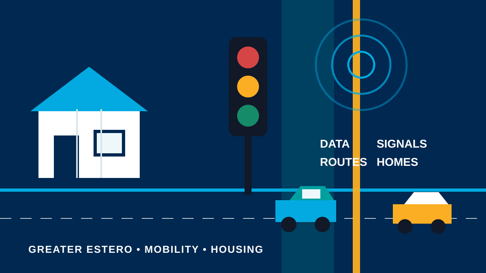
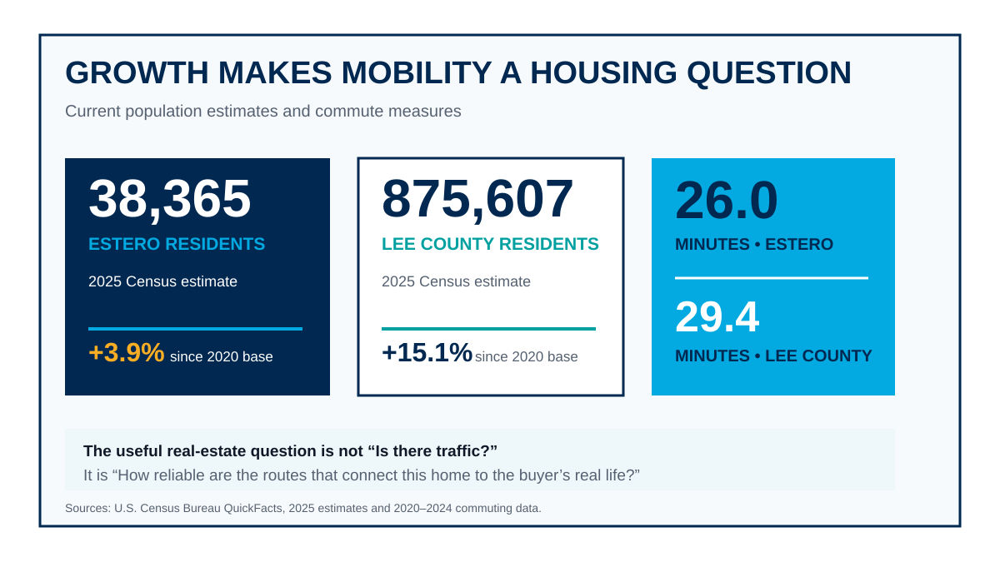
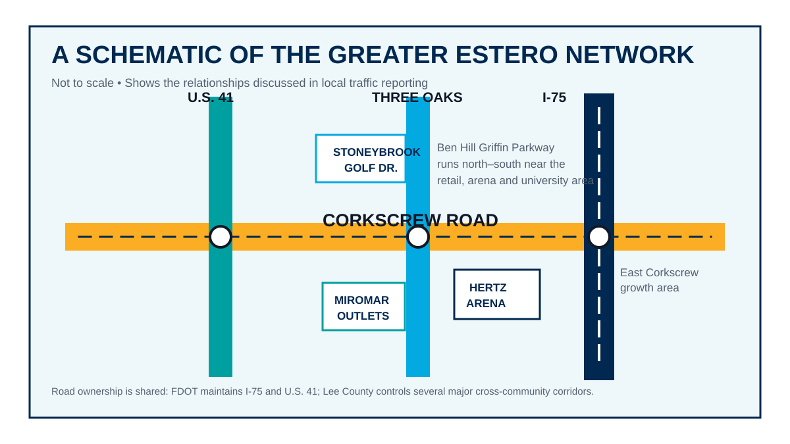
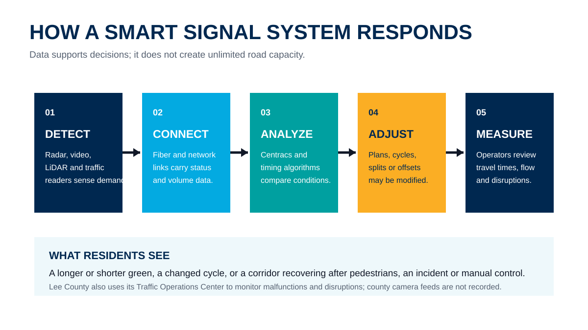
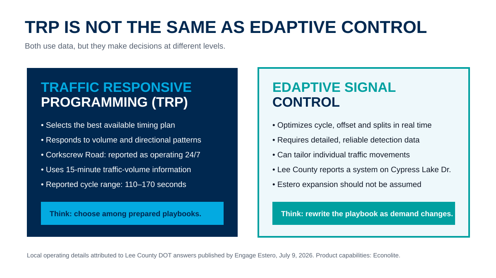
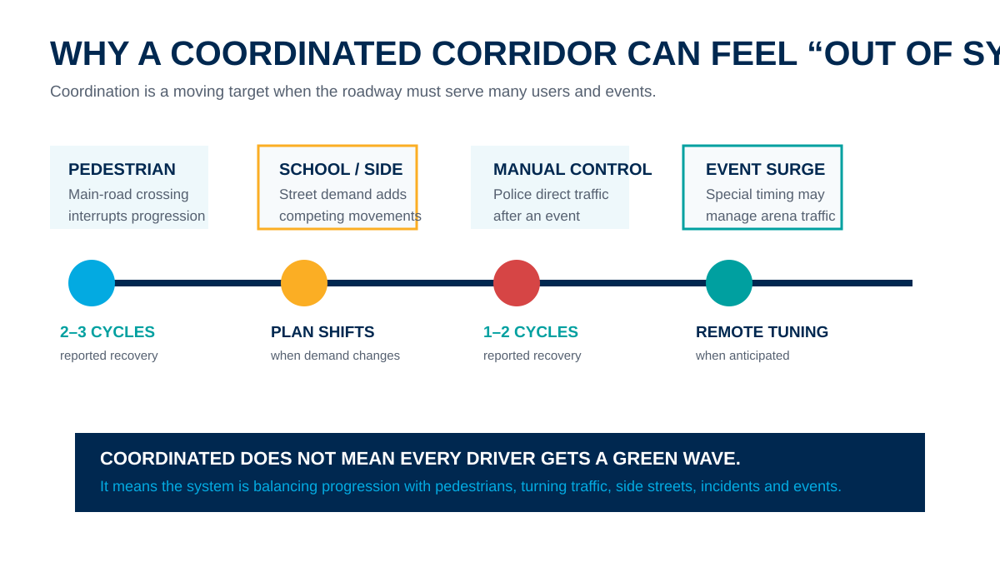
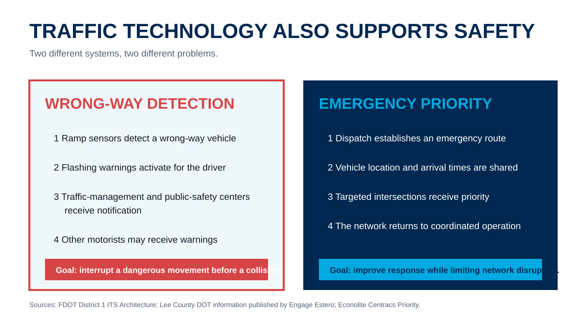
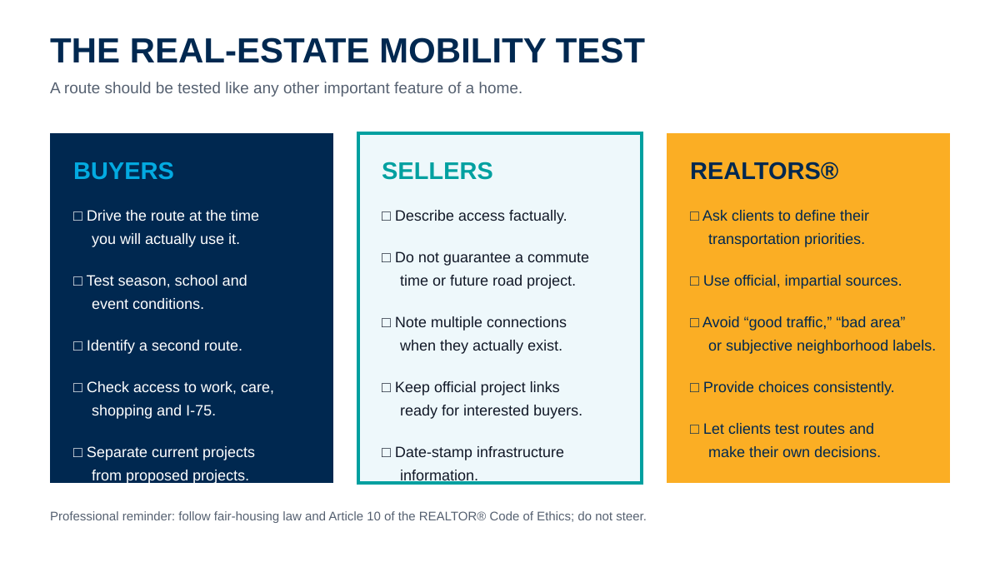

Greater Estero Is Growing—and Mobility Is Part of the Housing Conversation
Smart signals cannot erase every backup, but understanding how the network works can help buyers, sellers and REALTORS® make better decisions about access, reliability and everyday life.

A home is not an island. Its value to a particular buyer depends partly on how it connects to work, medical care, schools, shopping, recreation, airports and the people they see most. In Greater Estero, those connections increasingly run through a transportation network serving a fast-growing county, a seasonal population, major retail and entertainment destinations, Florida Gulf Coast University, Southwest Florida International Airport and expanding residential areas east of Interstate 75.
This does not mean a REALTOR® should tell a client that one neighborhood has “good traffic” and another has “bad traffic.” Commutes are personal, conditions change by hour and season, and subjective neighborhood labels can create fair-housing problems. It does mean transportation deserves the same disciplined due diligence as insurance, flood risk, association fees, property condition and future development.
The local conversation became especially timely after Engage Estero published a detailed July 2026 explanation of Lee County’s traffic-management technology and signal operations. CCOR reviewed that reporting alongside U.S. Census data, Lee County and Village of Estero resources, Federal Highway Administration guidance, FDOT systems information, product documentation and the REALTOR® Code of Ethics. The result is a real-estate-focused guide to what the technology does, what it cannot do and how consumers can evaluate mobility for themselves.
Growth Is the First Part of the Story
Greater Estero’s transportation pressure is not created by one intersection or one development. It reflects a regional growth pattern layered onto roads that must serve residents, workers, visitors, schools, shopping, events and emergency response.

The U.S. Census Bureau estimates that the Village of Estero had 38,365 residents in 2025, about 3.9% above its 2020 population-estimate base. Lee County reached an estimated 875,607 residents, up 15.1% from its 2020 base. Census commuting data for 2020–2024 reports a mean travel time to work of 26.0 minutes for Estero and 29.4 minutes for Lee County.1, 2
Those numbers do not prove that every commute is getting worse, nor do they measure seasonal traffic directly. They do explain why route capacity and reliability matter to housing decisions. A buyer who works from home three days a week, a retiree who prioritizes medical access and a family coordinating school and work trips may evaluate the same address very differently.
The better question is: “How does this property connect to the destinations and schedules that matter to this specific buyer?”
The Transportation Network Has More Than One Owner
Understanding who controls a road helps consumers find the right source for project status, signal concerns and future plans. The Village of Estero maintains many local roads, but its Public Works page notes that Three Oaks Parkway, Ben Hill Griffin Parkway, Estero Parkway Extension and Corkscrew Road remain under Lee County control because those roads extend beyond Village boundaries. FDOT maintains I-75 and U.S. 41.3, 4

This split responsibility matters in real estate. A proposed improvement mentioned in a Village meeting may depend on county or state coordination. A road-widening concept may still require design, right-of-way, funding and construction. A signal complaint on a county road should go to Lee County’s Traffic Operations Center rather than being treated as a permanent neighborhood characteristic.
The Village commissioned an update to its area-wide traffic study in 2024 because conditions had changed substantially since the first study was completed in 2017. Village materials identified planned housing both inside and outside Estero as part of the reason for updating traffic counts, modeling, roadway analysis and intersection analysis.5 For consumers, the key lesson is that transportation documents have dates. A ten-year-old traffic conclusion should not be presented as if it describes today’s hour-by-hour conditions.
What Happens Behind the Traffic Light
Most drivers experience a signal as a simple red-yellow-green device. The modern system behind it is much larger. Lee County’s Traffic Operations Center monitors signal operation, travel times, traffic volumes, malfunctions and disruptions. Operators can view county roadway cameras and may adjust signals to reduce delay during an incident. Lee County states that those camera feeds are not recorded, an important privacy distinction from automated enforcement systems.6

Local reporting describes a network that includes fiber-connected signals, microwave traffic readers, cameras, vehicle-detection equipment, video and LiDAR. Centracs, the advanced transportation management platform used by Lee County, can bring device monitoring, traffic data, signal timing and operational tools into a central system. The vendor describes modules that support high-resolution data, alerts, pattern optimization, adaptive control and signal priority.7, 8
Technology does not make traffic disappear. It helps an agency use the road and signal capacity it already has more intelligently. FHWA explains that adaptive systems can reduce delay, improve average speeds and travel times, and reduce travel-time variability when their control parameters align more closely with actual conditions. FHWA also emphasizes measurement: agencies should evaluate travel time, delay, stops, queues and reliability rather than assuming every technology produces the same result on every corridor.9, 10
TRP and Edaptive Control Are Related—but Different
One of the most useful distinctions in the Engage Estero Q&A is the difference between Traffic Responsive Programming and Edaptive signal control.

According to Lee County DOT responses published by Engage Estero, Corkscrew Road uses Traffic Responsive Programming around the clock. The system evaluates traffic-volume information in 15-minute intervals and selects timing plans based on volume and directional demand. Reported cycle lengths range from 110 to 170 seconds, and certain signals may operate on half-cycles within longer plans.7
Edaptive control goes further. Econolite describes Centracs Edaptive as optimizing the cycle, offset and green-time splits in real time. Engage Estero reported that Lee County currently operates an Edaptive system on Cypress Lake Drive. That is evidence of county capability—not proof that Edaptive is already deployed throughout Estero. Until Lee County identifies a specific Estero deployment, REALTORS® and consumers should not market a property as benefiting from a future adaptive-signal upgrade.7, 8
Cycle
The total time required for a signal to complete all scheduled movements before beginning again.
Split and Offset
A split is the green time assigned to a movement. An offset helps coordinate when one signal begins its cycle relative to another.
Why Coordinated Signals May Still Feel Out of Sync
Signal coordination does not mean every driver will travel through a corridor without stopping. The system must serve turning traffic, side streets, pedestrians, school patterns, incidents and special events. A green progression that favors one direction can create a different wait for another movement.

The local Q&A offers several concrete examples. It reports that pedestrian crossings on the main roadway can temporarily interrupt coordination and that the system may need approximately two to three cycles to recover. After law enforcement manually controls an intersection—such as during arena traffic—the system typically returns to coordinated operation within one or two cycles. Lee County also reported using special timing adjustments for post-game traffic surges and monitoring anticipated major events remotely.7
That context can change how a consumer interprets a single frustrating drive. A corridor may be functioning as designed while accommodating a large pedestrian phase or recovering from an event. Conversely, a persistent malfunction or unusual delay may deserve a report to the Traffic Operations Center. Lee County asks residents to provide the location, date, time and description when reporting a signal-timing concern.11
Traffic Technology Also Supports Safety and Emergency Response
Mobility is not only about convenience. It is also about detecting dangerous movements and helping emergency vehicles reach incidents.

FDOT’s District 1 intelligent-transportation architecture describes wrong-way detection systems that identify vehicles entering the wrong direction, warn the driver and notify traffic-management and public-safety centers. If the vehicle continues, other motorists may receive warnings.12
Emergency vehicle pre-emption or priority uses another process. Engage Estero reported that some Lee County fire districts use GPS-based pre-emption and that the county is developing a more advanced system connecting the central signal network with public-safety and sheriff dispatch. Econolite’s Centracs Priority documentation describes using vehicle location and estimated arrival times to apply operational rules at signals.7, 8
The goal is targeted priority—not turning an entire county green at once. A well-designed system seeks to assist the emergency route while minimizing disruption to the rest of the network.
What Smarter Traffic Management Can—and Cannot—Change
A smart-signal system is most valuable when demand varies by direction, time, season or event. It can reduce avoidable delay and improve reliability. It cannot eliminate the physical limits of a road, erase a crash, prevent every pedestrian interruption or absorb indefinite growth without other investments.
That is why technology should not be framed as a substitute for all widening, intersection, transit, bicycle or pedestrian improvements. Greater Estero’s long-term mobility conversation includes road geometry, access management, land use, alternative routes, shared-use paths, safe crossings and the relationship between development approvals and infrastructure. Smart operations are one layer of a larger system.
Modern signals are also expensive. The Engage Estero article reports an estimated cost of approximately $1.2 million to $1.5 million for a new signal when right-of-way, detection, cameras, communications and software are included.7 That figure is useful for illustrating complexity, but it should be attributed and not treated as a universal bid price for every intersection.
What Mobility Means in a Real-Estate Transaction
Transportation can affect a transaction long before closing. It influences which properties a buyer agrees to tour, how many showings fit into an afternoon, whether an out-of-area buyer understands seasonal conditions and how confidently a seller can describe access without overpromising.
For buyers: test the life, not just the listing
A map app provides a useful snapshot, but a single estimate is not due diligence. Buyers should drive or ride the route during the hours they expect to use it. In Greater Estero, it may be useful to compare a typical weekday with school traffic, winter season and an arena or major retail event. They should identify alternate connections and note whether one incident can isolate the route.
For sellers: describe access with facts
A seller may legitimately highlight proximity to I-75, U.S. 41, RSW, shopping or medical facilities. The safer wording is factual: distance, named connections and currently available routes. “Ten minutes to the airport” or “traffic will improve when the new system arrives” can become misleading when conditions or project schedules change.
For REALTORS®: translate data without steering
A REALTOR® can help a client locate official traffic counts, project pages, road-ownership information and signal-reporting contacts. The professional should avoid subjective neighborhood judgments and should provide objective resources consistently. Article 10 of the 2026 REALTOR® Code of Ethics prohibits discrimination and activities that may result in steering. NAR guidance recommends recognized, reliable, independent sources when clients ask for neighborhood information.13, 14

A Practical Showing-Day Strategy
Mobility also affects the REALTOR®’s workday. A route that looks compact on a map may cross several signal systems and high-demand intersections. For a more reliable tour:
- Group properties by corridor rather than by straight-line distance alone.
- Build recovery time around Corkscrew Road, U.S. 41, I-75 ramps and major event periods.
- Check Lee County Roadwatch and Florida 511 before leaving.
- Do not schedule a gated-community arrival so tightly that one missed cycle disrupts the entire tour.
- For remote buyers, record the approach to the community as well as the property itself.
- When transportation is a major priority, encourage the client to repeat the route independently.
These steps are not about discouraging a buyer from an area. They give the buyer better information and reduce the chance that a one-time, off-peak showing creates an unrealistic picture of everyday access.
The Bottom Line for Greater Estero
Greater Estero’s traffic system is more dynamic than it appears from the driver’s seat. Signals can respond to changing volumes, operators can manage incidents and special events, and new detection and priority tools can support safety. At the same time, a smart signal cannot manufacture road capacity or guarantee that a rapidly growing region will never experience delay.
For real estate, that nuance is the point. Transportation is neither a simple sales slogan nor a reason to make broad judgments about a neighborhood. It is a measurable, personal part of housing fit.
Here are the roads, current projects, official sources and route-testing options. Now let us evaluate how this home works for the life you plan to live.
Where to Check Current Information
- Lee County Traffic Operations Center: signal timing, malfunctions and observed issues.
- Lee County Roadwatch: weekly construction and lane-closure updates.
- Village of Estero Public Works: Village projects, studies and local-road information.
- Lee County MPO: transportation planning meetings, committees and long-range materials.
- Florida 511: incidents, congestion and state-road travel information.
- FDOT District 1: interstate and state-highway projects and intelligent-transportation systems.
Transportation systems and projects change. Check the publication date, responsible agency and project phase before sharing a claim with a client.
Sources and Methodology
- U.S. Census Bureau QuickFacts: Estero village, Florida. 2025 population estimate and 2020–2024 commuting data.
- U.S. Census Bureau QuickFacts: Lee County, Florida. 2025 population estimate, growth and 2020–2024 commuting data.
- Village of Estero Public Works. Road responsibility and public-works resources.
- Village of Estero Traffic/Roads. Agency responsibility and resident resources.
- Village-wide traffic study and Code Enforcement among items addressed by Council, Village of Estero, January 3, 2024.
- Lee County Traffic Operations Center. Signal monitoring, incidents, travel-time and volume monitoring, camera privacy and contact information.
- How Technology Improves Traffic in Greater Estero, Engage Estero, Mark Novitski, July 9, 2026. Includes Lee County DOT Q&A on Corkscrew Road timing, recovery, pre-emption, TRP and Edaptive control.
- Econolite Centracs Traffic Control Software. Product capabilities for Edaptive, Priority, detection, data and timing optimization.
- FHWA Traffic Signal Timing Manual, Chapter 9. Adaptive signal concepts and potential operational benefits.
- FHWA Measures of Effectiveness and Validation Guidance for Adaptive Signal Control Technologies. Performance measures including travel time, delay, stops, queue length and reliability.
- Lee County DOT Traffic Overview. Signal-timing concern reporting instructions.
- FDOT District 1 ITS Architecture: Wrong Way Vehicle Detection and Warning.
- 2026 REALTOR® Code of Ethics and Standards of Practice, Article 10.
- NAR: Steering, Schools, and Equal Professional Service.
Methodology: CCOR reviewed primary government and professional sources and used Engage Estero’s July 2026 article for locally specific Lee County DOT answers that were not available in equivalent detail on the public agency pages reviewed. Locally specific operating figures are attributed accordingly. No claim is made that transportation technology increases an individual property’s value.